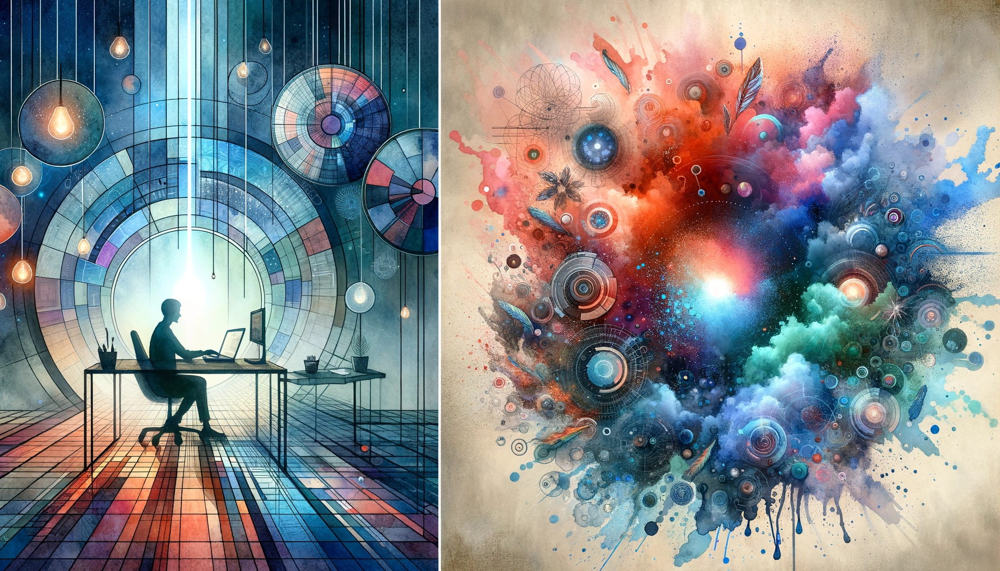

written by Eric J. Ma on 2026-04-04 | tags: productivity burnout attention feedback calibration multitasking exhaustion kanban workflow ai

In this blog post, I reflect on how AI tools have accelerated my coding workflow but also made it more exhausting by collapsing my attention span and pushing me to juggle too many tasks at once. I explore why our brains are now the bottleneck, and share strategies for calibrating our work pace to match our neural capacity for sustainable productivity. How can we harness AI's power without burning out or losing focus?
Since the beginning of the year, as I've been really maxing out on agentic coding and trying to explore the patterns and figure out what's working and what's not, one particular thing has been sticking out: I'm paralleling so much of my work. I'm frequently doing five or six different open pull requests, and it's become frankly really exhausting.
I've been trying to figure out why this feels so different from pre-AI days, when I'd work on one thing at a time and feel productive but not overwhelmed. What changed?
Tools haven't gotten worse—they've gotten dramatically faster. And when everything moves faster, the gaps between tasks become more expensive.
Last month, a Reddit thread sparked a discussion about what some are calling "AI psychosis" or "cyber psychosis": Andrej Karpathy reportedly went from 80% writing his own code to 0%, spending 16 hours a day directing AI agents. Garry Tan described similar feelings of burning through 4 hours of sleep, unable to stop building.
The debate that followed went beyond executives; it revealed a community-wide phenomenon: people running multiple Claude Code sessions in parallel, hitting rate limits daily, feeling like idle tokens were wasted tokens.
The consensus across replies was clear: AI psychosis is real, but it's less about excitement and more about a draining, addictive pressure to constantly build. The fear is missing out on the next big thing; it's the ground shifting beneath our feet, and stopping means getting left behind.
Here's what I've found hard to articulate: AI tools have expanded possibility faster than ever; their real danger lies in how they collapse our attention span. Before AI, we operated on a fairly flat productivity curve: more effort meant more output, slowly but sustainably. Now we're running on a different kind of curve altogether—one that's getting steeper in both directions.
In his book Where Good Ideas Come From, Steven Johnson described what he called the adjacent possible: the set of next-step ideas that are just beyond our current reality but still reachable. At any moment, only a limited set of next moves are accessible.
Here's what makes this concept critical for understanding our current moment: as you explore the adjacent possible (through moves that seem natural in the moment) the boundary itself expands. Each discovery opens doors that weren't accessible before, creating an accelerating landscape where what's possible keeps growing faster and faster.
I've seen this pattern play out: It explains why breakthroughs often happen when they do: the preconditions have finally assembled, and only then can you see the next move. But in an accelerating landscape, those preconditions assemble more quickly, and with them, the next set of possibilities.
Before AI, the adjacent possible was bounded by what a single person could manually assemble: write code, test it, debug it, repeat. The feedback loop, prompt, think, interpret, iterate, took time.
AI tools changed that calculus. They transformed the feedback loop, making it exponentially faster. Each new capability doesn't just add possibility; it reconfigures what's adjacent.
Once you see Claude Code as an idea multiplier, the pattern is clear. The Garry Tan/Karpathy effect kicks in: possibility grows faster than effort.
This is where it gets subtle: AI has shifted the inverted U curve of productivity and changed its shape.
Here's what that looks like, the gray curve shows pre-AI productivity, and the red curve shows post-AI:
Pre-AI: flatter curve. Effort mapped to output roughly proportionally. You could invest effort and see gains compound slowly, sustainably, with exhaustion coming only after sustained periods.
Post-AI: taller, narrower curve. Less effort gets you more output initially; the left slope is steeper, giving an astonishing return on initial investment. The right-side drop-off is sharper—exhaustion hits earlier, harder.
The peak represents the optimal effort level where output maximizes. Beyond that point, additional effort produces diminishing returns and exhaustion sets in faster than you can recover.
I wrote about this in a previous post on closing air gaps: the problem is that things are faster; it's that the gaps between tasks: those moments where attention bleeds out, are more expensive when everything moves faster.
AI gives us 10X faster feedback loops: code spits out, prompts happen in seconds. Neural processing remains capped at biological speeds.
When loop cadence exceeds brain throughput, the cognitive queue overflows. Working memory saturates. Attention bleeds out. Exhaustion sets in, from the constant context switching, the constant need to scan multiple sessions for "what was done."
The optimal zone is when loop speed equals brain processing speed, not running tools as fast as possible.
Here's what I believe we need to be able to do in order to calibrate properly.
First, tighten feedback loops. The goal is closing the loop properly on one task before opening another—I used to think juggling multiple Claude Code sessions was productivity; turns out it's just context switching masquerading as output. The trick is simple: run one session, close the loop completely, review what you got, then decide if your next move should be a new loop or something else entirely. Fast loops create natural pacing, which means you don't need to check tabs constantly because each cycle finishes with closure.
Second, build queue and notification systems—especially when you genuinely need multitasking. Most of us reach for multiple agents because we're solving the wrong problem: juggling open sessions creates overhead your tools cannot absorb. The Kanban approach works well: externalize context switching onto a board where agents update their status automatically. The system notifies you only when human judgment is required, so your job shifts from scanning to assessing—much lower overhead for neural throughput.
This is the crucial distinction.
Pre-AI, you could coast for years on the left slope. Effort and reward grew linearly, so you just needed to work consistently.
Post-AI, the left slope is steeper, so you ascend faster; but also fall faster. AI-assisted tools don't eliminate the inverted U curve; they sharpen its peak and drop-off.
Calibration recognizes that more effort does not equal more output. Instead, there exists an optimal effort level where output peaks. Beyond that point, additional effort produces diminishing returns, and rest becomes the superior strategy.
The bottleneck is neural throughput—not tokens or API calls.
Ask yourself: Is my feedback loop faster than I can process?
Practical heuristic: When you start scanning multiple AI threads for "what was done," you've exceeded your bandwidth. That's the signal that your loop cadence outruns your neural capacity.
Ask, "What is the maximum rate at which my brain can consume and act on output?" This question defines calibration—when work aligns with your neural capacity.
AI has revealed our limits: the inverted U curve has become more visible, accelerated. Our brain is the rate limiter, and rightly so! We now need to learn to brake before you hit the wall.
The tools are powerful, but they don't change human neurology. No amount of prompt engineering can compress the time it takes for our brains to reason about things. If we try to go beyond our natural limits, dangerous things happen.
Calibration is the new baseline practice: a discipline you maintain daily, adjusting your loop cadence to match neural throughput, closing gaps before they become exhaustions.
The goal is sustainable access to the adjacent possible, rather than simply 10X-ing our output. And the goal is to do it for the long run, not just this week.
The goal is to work at the optimal effort level where output peaks. Beyond that point, additional effort produces diminishing returns and exhaustion sets in.
The default workflow:
When multiple agents must run simultaneously:
You synchronize to stay on the left slope of your productivity curve, where effort yields return without triggering burnout. When tools run faster than your brain can process status updates, exhaustion sets in.
The rhythm shifts from "hustle harder" to synchronize—matching your brain's processing speed to the tools' output rate. When the signal outruns neural processing, interference replaces insight. You tune the system to keep your brain in phase on the left slope of your productivity curve, where effort produces sustainable output.
@article{
ericmjl-2026-calibration-is-synchronizing-feedback-loops-with-neural-throughput,
author = {Eric J. Ma},
title = {Calibration Is Synchronizing Feedback Loops With Neural Throughput},
year = {2026},
month = {04},
day = {04},
howpublished = {\url{https://ericmjl.github.io}},
journal = {Eric J. Ma's Blog},
url = {https://ericmjl.github.io/blog/2026/4/4/calibration-is-synchronizing-feedback-loops-with-neural-throughput},
}
I send out a newsletter with tips and tools for data scientists. Come check it out at Substack.
If you would like to sponsor the coffee that goes into making my posts, please consider GitHub Sponsors!
Finally, I do free 30-minute GenAI strategy calls for teams that are looking to leverage GenAI for maximum impact. Consider booking a call on Calendly if you're interested!